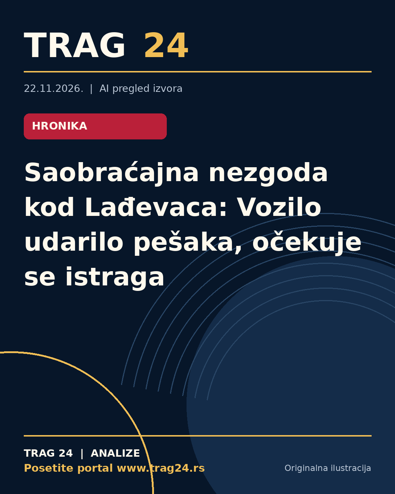

Saobraćajna nezgoda kod Lađevaca: Vozilo udarilo pešaka, očekuje se istraga

ŠTA SE DOGODILO
Na magistralnom putu Čačak - Kraljevo, u mestu Lađevci kod pumpe, dogodila se teška saobraćajna nezgoda tokom večernjih sati u kojoj je vozilo udarilo pešaka.
HRONOLOGIJA
Do nesreće je došlo u večernjim časovima, a po dostupnim informacijama koje su još uvek nezvanične, pešak je zadobio povrede od kojih je navodno preminuo. Tačan tok događaja i okolnosti pod kojima je do nezgode došlo nisu još uvek precizno poznati.
ŠTA NAVODE IZVORI
Oba dostupna izvora, Blic i Telegraf, prenose iste informacije dobijene od očevidaca i neimenovanih izvora. Izveštaji ističu da postoje sumnje o smrtnom ishodu povređene osobe, ali eksplicitno naglašavaju da su informacije nezvanične i da će daljom istragom biti utvrđene sve okolnosti.
ŠTA JE POTVRĐENO
Potvrđeno je da je došlo do saobraćajne nezgode na magistralnom putu kod Lađevaca i da je u događaju učestvovalo vozilo i pešak. Takođe, potvrđeno je da je u toku zvanična istraga koja treba da utvrdi sve detalje nesreće.
ŠTA NIJE POTVRĐENO
Nije potvrđeno da je pešak podlegao povredama jer su ovi navodi bazirani na nezvaničnim izvorima i izjavama očevidaca, a nema službenih saopštenja nadležnih organa. Takođe, nisu poznati precizni detalji o uzrocima nezgode ili tačan broj i identitet učesnika.
ŠTA OSTАJE OTVORENO: Ostaje da se zvanično potvrdi tačan ishod povreda pešaka, kao i da se utvrde sve okolnosti koje su dovele do udesa. Takođe, nije poznato da li će biti uključeni drugi učesnici ili eventualne sankcije na osnovu istrage.
Izvori
- https://www.blic.rs/vesti/hronika/teska-saobracajna-nesreca-na-magistrali-kod-cacka-strahuje-se-da-ima-poginulih/b1n1le6
- https://www.telegraf.rs/vesti/hronika/4437723-teska-nesreca-kod-ladjevaca-strahuje-se-da-ima-mrtvih
Ova analiza je pripremljena uz pomoć veštačke inteligencije na osnovu javno dostupnih izvora. Navodi izvora nisu nužno nezavisno potvrđeni.